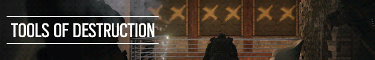

About the game
Master the art of destruction and gadgetry in Tom Clancy’s Rainbow Six Siege. Face intense close quarters combat, high lethality, tactical decision making, team play and explosive action within every moment. Experience a new era of fierce firefights and expert strategy born from the rich legacy of past Tom Clancy's Rainbow Six games.
Engage in a brand-new style of assault using an unrivaled level of destruction and gadgetry.
On defense, coordinate with your team to transform your environments into strongholds. Trap, fortify and create defensive systems to prevent being breached by the enemy.
On attack, lead your team through narrow corridors, barricaded doorways and reinforced walls. Combine tactical maps, observation drones, rappelling and more to plan, attack and defuse every situation.
